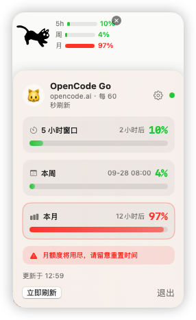

桌面上的一只小猫，顺手看一眼用量。不绑定任何中转，任意渠道都能接。
macOS 13 及以上 · Apple Silicon · 菜单栏和 Dock 都不占图标

OpenCodeCat-macOS-arm64.dmg第一次打开如果提示找不到 Key，点详情面板右上角的齿轮：名称随便填自己区分渠道用，Key 粘贴进去（默认脱敏，点眼睛看全文），用量接口填你的中转地址就行。保存后自动刷新，Key 只存本机，不会上传到任何地方。
也可以提前写好文件，或者用环境变量：
echo -n "你的key" > ~/.opencode-usage-key chmod 600 ~/.opencode-usage-key # 或 export OPENCODE_GO_API_KEY=你的key